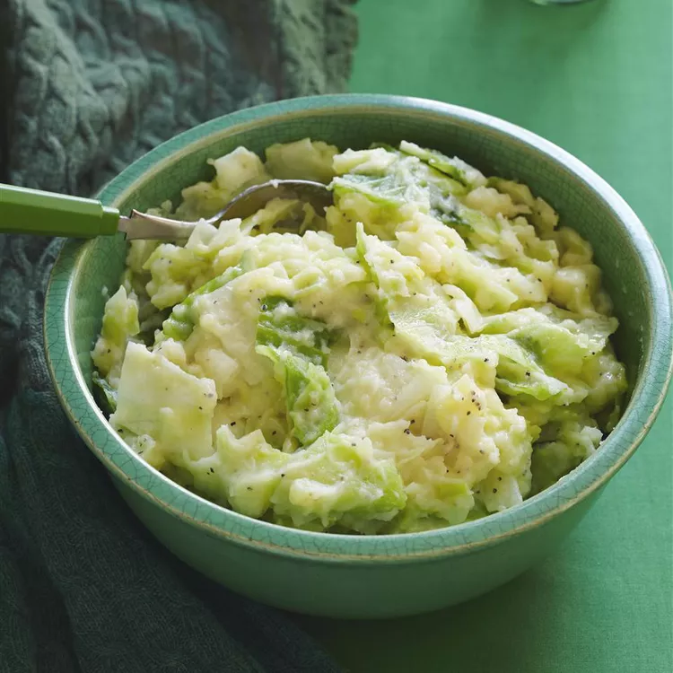

Colcannon Recipe

Description
This colcannon recipe uses leeks and green cabbage but it tastes equally delicious with kale.
It is traditional Irish Halloween fare but so comforting, it's good anytime!
Ingredients
1 pound potatoes
1 pound green cabbage, sliced
2 small leeks, cleaned and thinly sliced
1 cup milk, or as needed
salt and pepper to taste
1 pinch ground mace
½ cup butter
Steps
- Place potatoes in a large pot and cover with salted water; bring to a boil.
Reduce heat to medium-low and simmer until tender, about 15 to 20 minutes.
Drain.
- While potatoes are boiling, simmer or steam cabbage in a separate pot until tender.
Drain and chop; set aside and keep warm.
- Place leeks in a small pot; add just enough milk to cover.
Simmer over low heat until leeks are soft, about 3 to 5 minutes.
- Season potatoes with salt, pepper, and mace; mash well. Stir in cooked leeks and milk.
Stir in cabbage and heat through until potatoes are pale green in color.
Make a well in the center of the colcannon and pour in the melted butter.
Mix well and serve.